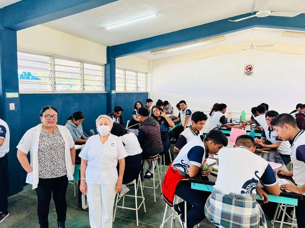
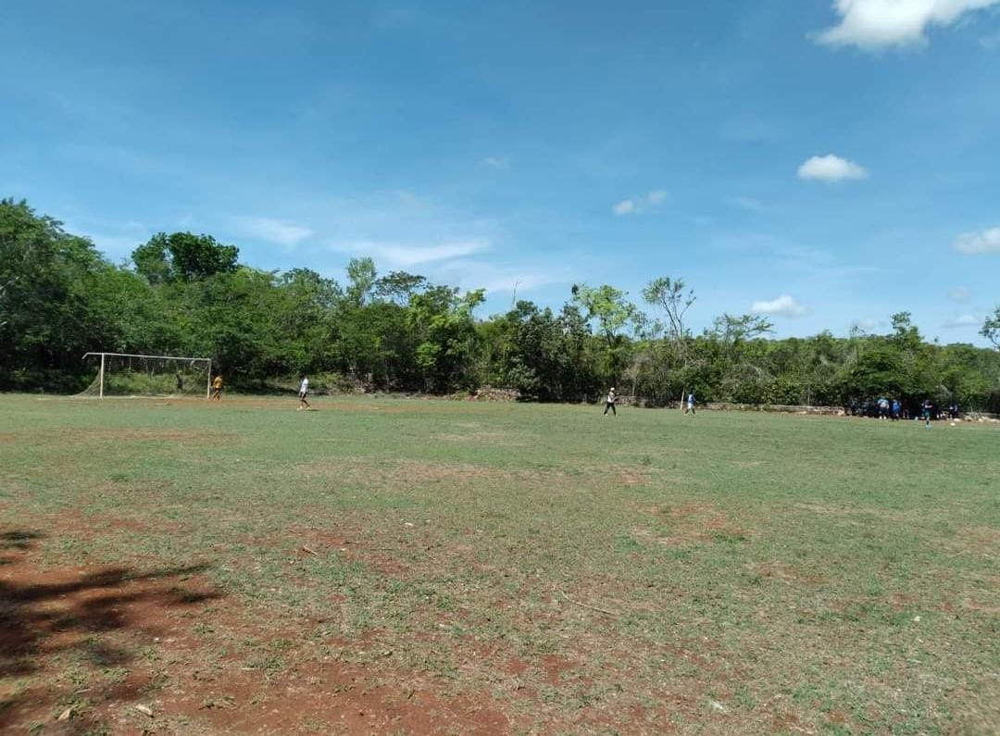
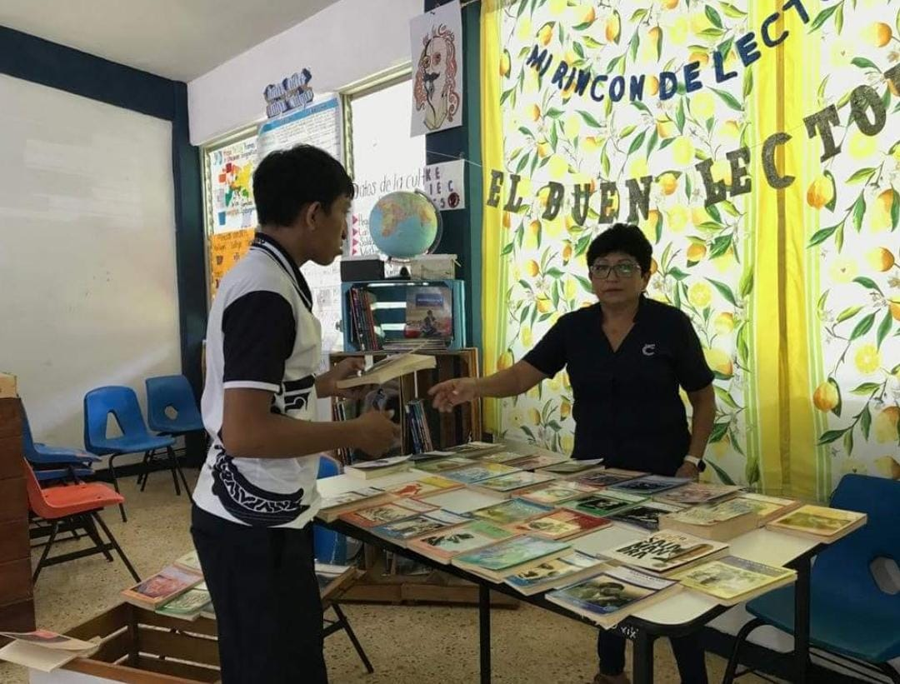

INFORMACION
EL COLEGIO DE BACHILLERES PLANTEL PETO
CUENTA CON AREAS PARA APRENDER DE MEJOR MANERA

El laboratorio de nuestra escuela es un espacio innovador donde los estudiantes pueden experimentar, investigar y aprender a través de la práctica. Equipado con equipos de última generación y supervisado por profesores expertos, el laboratorio proporciona un entorno seguro y estimulante para explorar conceptos científicos y desarrollar habilidades prácticas que prepararán a nuestros estudiantes para el futuro.
El domo de "COBAY
Plantel Peto" es un espacio versátil y multifuncional diseñado para
promover el aprendizaje experiencial y la creatividad en nuestros
estudiantes. Con su estructura única y su ambiente acogedor, el domo se
convierte en el escenario perfecto para una variedad de actividades
educativas y eventos especiales.

Nuestro campo escolar es un oasis de aprendizaje al aire libre, donde los estudiantes tienen la oportunidad de conectar con la naturaleza y disfrutar de una variedad de actividades educativas y recreativas. Situado en un entorno pintoresco y tranquilo, el campo ofrece un ambiente enriquecedor que complementa el aprendizaje en el aula y fomenta el desarrollo integral de nuestros estudiantes.

Nuestra sala de computo es un espacio moderno y equipado con tecnología de última generación, diseñado para fomentar el aprendizaje digital y el desarrollo de habilidades tecnológicas entre nuestros estudiantes. Con equipos actualizados y acceso a internet de alta velocidad, la sala de computo proporciona un entorno propicio para explorar, crear y aprender en el mundo digital.

En nuestra biblioteca, los estudiantes pueden encontrar una amplia variedad de libros que abarcan diversos géneros, temas y niveles de lectura. Desde libros de texto y novelas hasta obras de referencia y literatura infantil, nuestra colección está cuidadosamente seleccionada para satisfacer los intereses y necesidades de todos nuestros estudiantes.

En "COBAY Plantel Peto", nos enorgullece proporcionar a nuestros estudiantes un lugar seguro y adecuado para participar en actividades deportivas que promuevan la salud y el bienestar físico. Nuestra cancha de básquetbol está equipada con aros y tableros resistentes, así como con una superficie de juego de calidad que garantiza un juego suave y seguro.